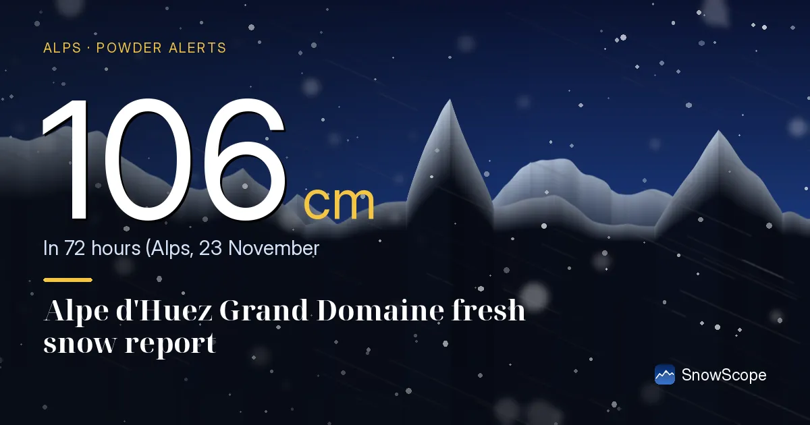

Alpe d'Huez Grand Domaine fresh snow report: 106 cm in 72 hours (Alps, 23 November)
Le Reposoir Chalet Neuf by height: top 25 cm (1,620 m), middle 18 cm (1,471 m), base 11 cm (1,323 m). Le Reposoir Chalet Neuf: +119 cm in 72 hours, 19 cm of it in the last 24 hours.
See the live snow forecast for Alpe d'Huez Grand Domaine in the SnowScope appSnow depth, powder alerts and the 3D map, free.
The fresh-snow numbers
Runners-up over the last 72 hours: Jungfraujoch Snow Fun Park, La Grave and Alpe d'Huez Grand Domaine, with 77 cm, 107 cm and 106 cm.
Snow-covered ground in the Alps: 107,320 km². Resorts with snow: 1,117 of 1,204.
| Resort | Snow depth | New snow, 72 h | Coming, next days | Top |
|---|---|---|---|---|
| Le Reposoir Chalet Neuf | 38 cm | 119 cm | 21 cm | 1,620 m |
| Jungfraujoch Snow Fun Park | 68 cm | 77 cm | 35 cm | 3,461 m |
| La Grave | 166 cm | 107 cm | 53 cm | 3,543 m |
| Alpe d'Huez Grand Domaine | 123 cm | 106 cm | 54 cm | 3,306 m |
| Les Grands Montets | 86 cm | 102 cm | 22 cm | 2,768 m |

Rain up to the top?
On Tuesday 24 November the freezing level climbs to about 2,750 m, above the top of the lifts at 1,620 m: rain can fall even at the top.
Rain on fresh snow makes it heavy and, after a cold night, icy: the days after are better for groomed runs than for powder.
At about 1,471 m, Le Reposoir Chalet Neuf has 10 cm today; a normal 23 November has 16 cm there.
That is more than in 13 of the 46 past winters on this date.
In past winters the best snow at Le Reposoir Chalet Neuf usually came mid-February / mid-March.
Day by day at Le Reposoir Chalet Neuf: Monday 23 November 19 cm; Tuesday 24 November 1 cm; Wednesday 25 November 15 cm; Thursday 26 November 5 cm.
Height by height at Le Reposoir Chalet Neuf: 1,323 m 11 cm on the ground, 19 cm more in the next 7 days; 1,471 m 18 cm on the ground, 21 cm more in the next 7 days; 1,620 m 25 cm on the ground, 22 cm more in the next 7 days.
Station check
Ground check, Val Miez station (2,191 m): 48 cm on the ground on 22 November, 29 cm new in 24 hours. The Gütsch station (2,209 m) adds a real measurement: 38 cm on the ground on 22 November, 27 cm new in 24 hours. Ground check, Mällige station (2,194 m): 68 cm on the ground on 22 November, 24 cm new in 24 hours.
Station values: measured, one point. Read them together.
The forecast in short
Forecast to 26 November: 54 cm at Alpe d'Huez Grand Domaine, 53 cm at La Grave and 17–77 cm at Jungfraujoch Snow Fun Park. Treat the later days with care.
Forecasts a few days ahead can change: look at the map again the day before you travel.
Snow line check
On 24 November the freezing level at Le Reposoir Chalet Neuf sits at 1,360 m to 2,750 m, over the top of the resort (1,620 m): rain or wet snow could fall on all slopes.
Staying safe
The official rating for the Le Reposoir Chalet Neuf area is 3 on the 5-level scale today (Météo-France BERA).
After fresh snow, wind builds drifts on sheltered slopes. Off-piste, the first days after a snowfall need the most care.
Tips for skiers
- Be on the first lift after a snowfall: by midday, sun and skiers have already changed the snow.
- South-facing slopes take the most sun and melt first; high, north-facing slopes keep their snow the longest.
- Before you ski off-piste or go touring, read the official avalanche bulletin (links below).
- Snow on the map does not mean a resort is open: check lifts and opening dates on the resort's website.
- Get a powder alert in the SnowScope app to know when Le Reposoir Chalet Neuf gets fresh snow.
About these numbers
Resort snow depths are the deepest snow on the resort's upper slopes on the date shown; they are estimates for an area, not a measurement at one point. Forecasts can change. Always read the official avalanche bulletin before going off-piste.
Official avalanche bulletins: Météo-France BERA · WSL-SLF
Cite this report
For research, teaching or the press: the numbers and charts are free to reuse under CC BY 4.0 with this citation.
SnowScope (2026), Alpe d'Huez Grand Domaine fresh snow report: 106 cm in 72 hours (Alps, 23 November), https://snowscope.app/blog/en/2026/11/alps-alpe-d-huez-grand-domaine-fresh-snow-powder-alert-23-november-2026.html, accessed 2026-11-23
SnowScope (Atlas Labs). (2026, November 23). Alpe d'Huez Grand Domaine fresh snow report: 106 cm in 72 hours (Alps, 23 November). SnowScope snow reports. https://snowscope.app/blog/en/2026/11/alps-alpe-d-huez-grand-domaine-fresh-snow-powder-alert-23-november-2026.html
BibTeX
@misc{snowscope2026alpsalpedhuezgranddomain,
author = {{SnowScope (Atlas Labs)}},
title = {Alpe d'Huez Grand Domaine fresh snow report: 106 cm in 72 hours (Alps, 23 November)},
year = {2026},
month = nov,
howpublished = {\url{https://snowscope.app/blog/en/2026/11/alps-alpe-d-huez-grand-domaine-fresh-snow-powder-alert-23-november-2026.html}},
note = {Published 2026-11-23 10:52 UTC; accessed 2026-11-23}
}· CC BY 4.0 · Methods, data and tools →
Alpe d'Huez Grand Domaine: snow and temperature by height, this winter vs last (tools) →
Follow Alpe d'Huez Grand Domaine
Free: a message when fresh snow is coming, and the forecast every morning.
More snow reports

Chamonix snow forecast for 23–29 November 2026: 27 cm at the top (8–46 cm), 14 cm at the base, snowiest day Wednesday 25 November, with neighbours compared.

Alpe d'Huez snow forecast for 23–29 November 2026: 40 cm at the top (18–62 cm), 10 cm at the base, snowiest day Wednesday 25 November, with neighbours compared.

Is Alpe d'Huez worth it for December 2026? We check the snow odds, the starting price of 58.00 EUR, and compare it with Les 2 Alpes.